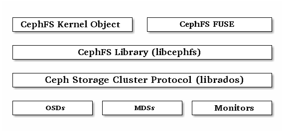

Ceph Filesystem¶
The Ceph Filesystem (Ceph FS) is a POSIX-compliant filesystem that uses a Ceph Storage Cluster to store its data. The Ceph filesystem uses the same Ceph Storage Cluster system as Ceph Block Devices, Ceph Object Storage with its S3 and Swift APIs, or native bindings (librados).
Important
CephFS currently lacks a robust ‘fsck’ check and repair function. Please use caution when storing important data as the disaster recovery tools are still under development. For more information about using CephFS today, see CephFS 尝鲜

Using the Ceph Filesystem requires at least one Ceph Metadata Server in your Ceph Storage Cluster.
Step 1: Metadata ServerTo run the Ceph Filesystem, you must have a running Ceph Storage Cluster with at least one Ceph Metadata Server running. | Step 2: Mount CephFSOnce you have a healthy Ceph Storage Cluster with at least one Ceph Metadata Server, you may create and mount your Ceph Filesystem. Ensure that you client has network connectivity and the proper authentication keyring. | Additional Details |